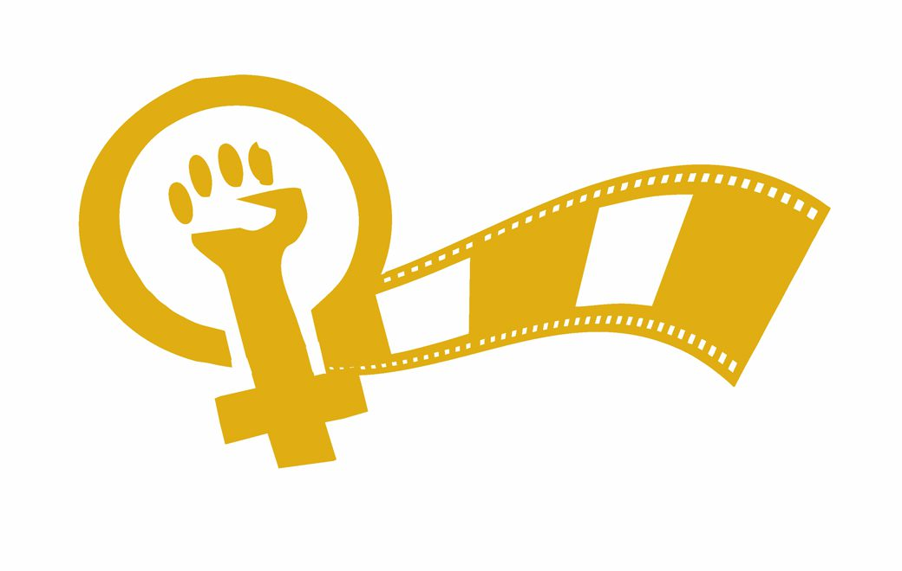
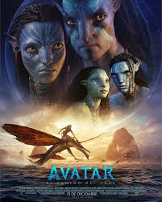
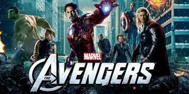
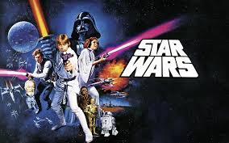

La violencia contra la mujer en el cine
El cine tiene el poder de emocionar, inspirar y construir imaginarios colectivos. Sin embargo, durante gran parte de su historia, también ha reproducido estereotipos y formas de violencia simbólica hacia las mujeres.
Muchas películas han mostrado a las mujeres como personajes secundarios, objetos de deseo o víctimas constantes, reforzando una visión desigual dentro y fuera de la pantalla.
Violencia simbólica en pantalla
En numerosas películas, la cámara se enfoca constantemente en el cuerpo femenino, mientras los personajes masculinos conservan el protagonismo narrativo.
Esto convierte a muchas actrices en objetos visuales, donde la apariencia importa más que la personalidad, las ideas o la historia propia.

“La violencia en el cine no siempre es física; muchas veces aparece en la forma en que las mujeres son observadas y representadas.”
#MeToo
El movimiento #MeToo marcó un momento histórico dentro de la industria cinematográfica. Miles de mujeres comenzaron a denunciar públicamente situaciones de abuso, acoso y violencia que durante décadas fueron silenciadas.
Este movimiento no solo reveló casos individuales, sino también una estructura de poder que protegía a hombres influyentes dentro del cine.
El caso Harvey Weinstein
Harvey Weinstein fue uno de los productores más poderosos de Hollywood. Durante años utilizó su posición para acosar y abusar de actrices y trabajadoras del cine.
Muchas víctimas guardaron silencio por miedo a perder oportunidades laborales, mientras la industria protegía al agresor.
Cuando diversas mujeres denunciaron públicamente los abusos, se produjo un efecto global que transformó la conversación sobre el poder, el consentimiento y la seguridad dentro del entretenimiento.
“El #MeToo no fue solamente contra un hombre; fue contra un sistema que normalizaba el silencio.”
El Test de Bechdel
El Test de Bechdel es una herramienta sencilla para analizar la representación femenina en el cine.
Para que una película apruebe el test debe cumplir tres condiciones:
- Que existan al menos dos mujeres con nombre.
- Que hablen entre ellas.
- Que su conversación no trate sobre un hombre.
Películas que no cumplen el test
| Película | Explicación |
|---|---|
| Avatar | Las conversaciones femeninas giran casi siempre alrededor del protagonista masculino. |
| The Avengers (2012) | Las mujeres tienen poca interacción entre ellas y suelen aparecer subordinadas narrativamente. |
| Harry Potter y las Reliquias de la Muerte 2 | Aunque existen personajes femeninos importantes, rara vez conversan sobre temas ajenos a Harry o Voldemort. |
| Star Wars (trilogía original) | Existe una escasa presencia femenina dentro de la narrativa principal. |
Representaciones populares



Reflexión final
El cine moldea la forma en que entendemos las relaciones, el poder y la identidad.
Cuando las mujeres son representadas únicamente como acompañantes, víctimas o adornos visuales, se limita la percepción social de su humanidad y autonomía.
Gracias a movimientos como el #MeToo y herramientas críticas como el Test de Bechdel, hoy existe una mayor conciencia sobre la necesidad de construir historias más justas e inclusivas.
“La verdadera magia del cine ocurre cuando todas las personas pueden verse reflejadas con dignidad en la pantalla.”